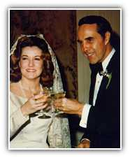
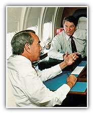

The Bob Dole Story
 A Happy Time
The mid 1970s also marked a happy personal time for Bob Dole. That's when he met and married a bright and beautiful woman from North Carolina named Elizabeth Hanford. A Republican leader herself, Elizabeth Dole has been Secretary of Transportation for President Reagan and Secretary of Labor for President Bush. She was the first woman in history to serve in two Cabinet posts under different Presidents. She is now President of the American Red Cross where her efforts in disaster relief and improving blood supply have earned her national recognition.
 Republican Leader
The 1980s marked Bob Dole's rise to the pinnacle of leadership nationally with his Republican leadership in the Senate and in Washington. As Chairman of the Senate Finance Committee, he spearheaded the enactment of President Ronald Reagan's historic tax cuts. It was the largest tax cut in American history - and stimulated the longest peacetime economic recovery in history. To date, these tax cuts have saved the American people more than $2.5 trillion.
Previous Page | 1 | 2 | 3 | 4 | 5 | 6 | 7 | 8 | 9 | Next Page